P1 - Kısa LED devresi (12 LED, 11 pin 1.0 mm)
Oluşturma: 13.11.2026 19:24 · Kaynak: docs/K.pdf · fpc-vektor skill
Özet
12 LED'li arka aydınlatma katmanı (0402 LED, iletken yapıştırıcıyla montaj). İki gümüş baskı (alt hatlar + dielektrik üstü köprüler), dielektrik köprü yamaları, 11 pinlik 1.0 mm ZIF kuyruğu. LED konumları P2'nin oval pencereleriyle 0.1 mm içinde örtüşür.
Bu rapor nasıl incelenir?
_kontrol_taramali.svg dosyasında çizim, hizalanmış taramanın üstündedir. CorelDRAW'da tarama katmanını kilitleyip katmanları tek tek açıp kapatarak karşılaştırın.Analiz süreci
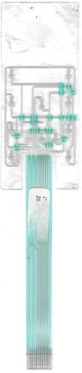
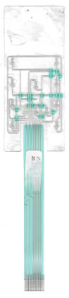
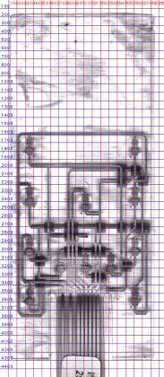
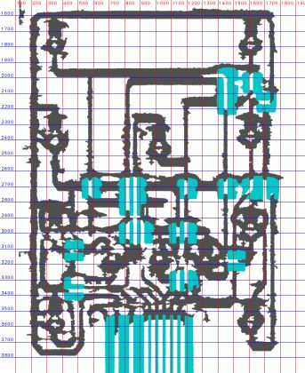
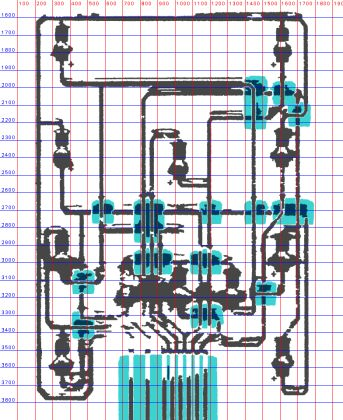
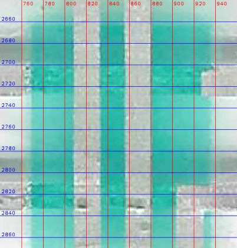
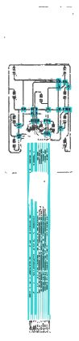
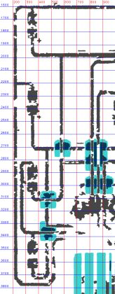
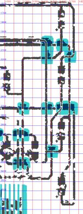
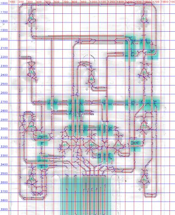
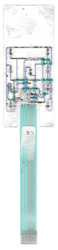
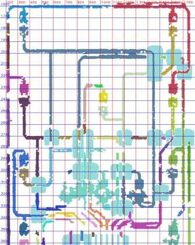
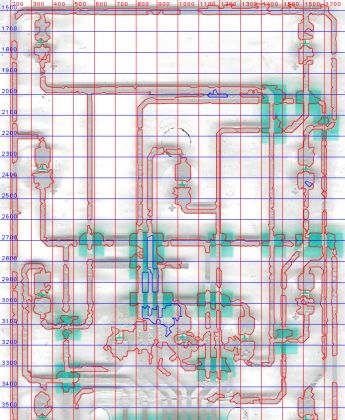
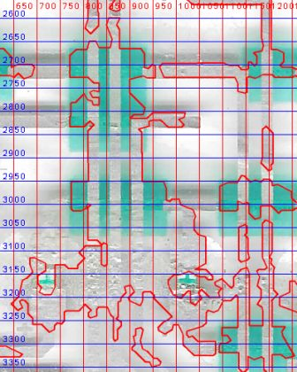
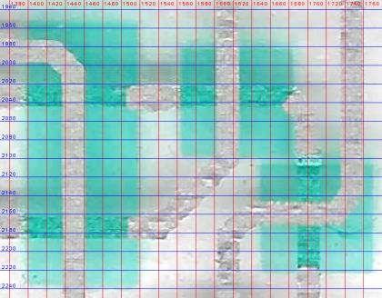
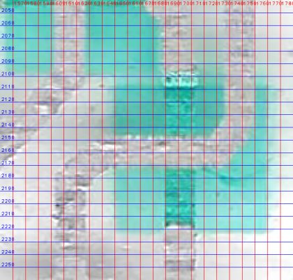
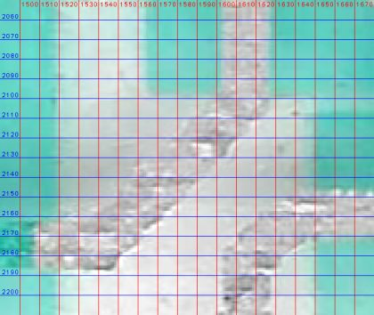
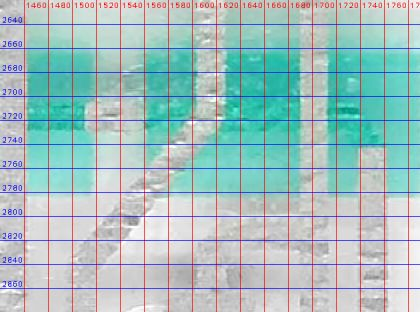
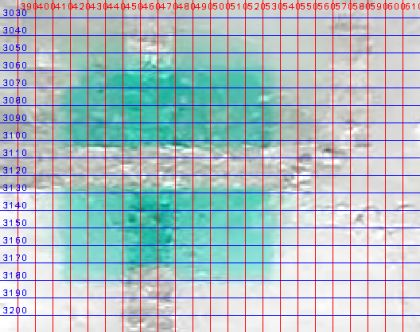
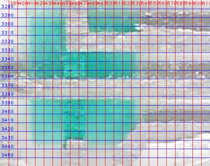
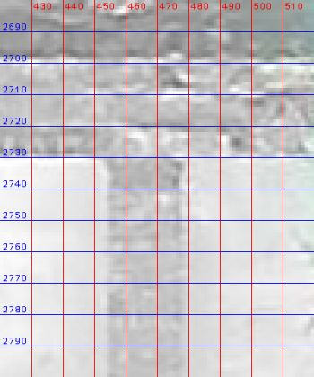
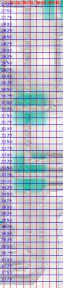
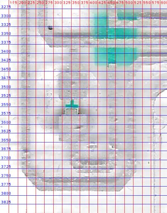
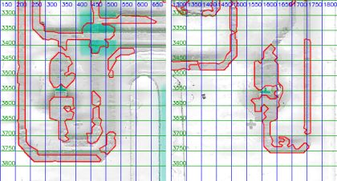
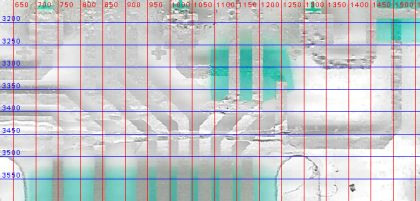
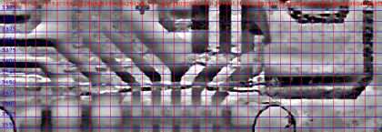
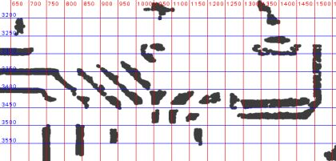
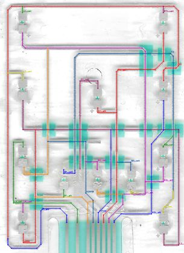
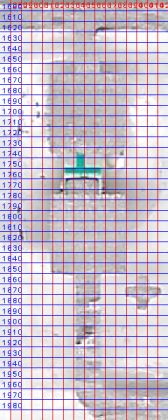
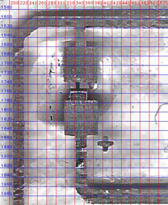
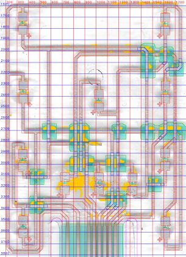
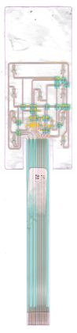
Bulgular
- Yapı: alt gümüş + dielektrik yamalar + üst gümüş köprüler; kuyrukta dielektrik, konnektör ucunda arka takviye, kuyrukta yapıştırma etiket.
- Ortak anot hattı R1 kartın çevresini dolaşıyor ve LED'lerin üst pedlerini besliyor.
- LED'ler kısmen seri bağlı. Örnek: LED2'nin katodu LED4'ün anoduna gidiyor. L1, L3, B2 ve B3 katotları ortak bir hatta toplanıyor.
- Konnektörde 11 pozisyonun 8'i kullanılıyor; 2, 4 ve 11. pozisyonlar uçta dummy kontak.
- Kesim ile baskı arasında kuyrukta ~0.26° dönüklük var; kuyruk dielektriği kesime göre asimetrik.
- 12 LED, P2'nin oval pencereleriyle x'te 0.1 mm içinde örtüşüyor; iki parçanın ölçümleri birbirini doğruluyor.
- Faz 3 öncesi düzeltmelerden sonra kalan ağ HATA'ları (4): B1/R3/R4 üst, B2 üst, B3 üst, C1 üst pedleri pinsiz — hepsi orta-alt leke bölgesinde. Pin 6 ile 9 çizimde aynı ağda (H2818, V578'e T ile bağlanıyor; taramada da birleşik görünüyor).
Karar noktaları
Ölçümün tek başına yetmediği, yorum veya kullanıcı tercihi gerektiren noktalar. Katılmadığınız kararı numarasıyla bildirin.
- Yeni tarama (düz, arkadan aydınlatmalı)
- Mevcut taramayla devam, belirsizleri işaretle
- Devam + multimetre ile doğrulama
- Önce P3/P4
- Parlaklık eşiği
- Doku (yüksek frekans) eşiği
- Köprü geçen hattın tamamı 2. baskıda
- Sadece köprü parçası 2. baskıda (yama + 0.4 mm bindirme)
- Her kesişmeyi elle okumak
- Maske örneklemesiyle otomatik (parça bazında)
- R1 alt hattına bağlı
- Bağlı değil, LED4 alt pedine gidiyor
- R1 alttan döner, x≈11 mm dikeyle pin 1'e gider
- Başka bir yol
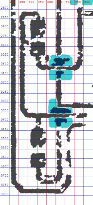
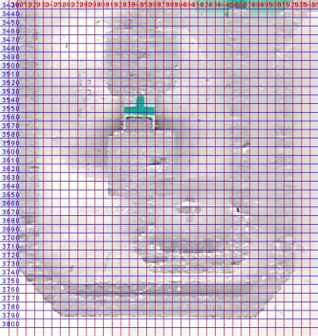
- Lekenin altını tahmin etmeden çizmemek
- Düzlemsel sıra + ölçülen çaprazlarla eşlemek
- Her pedi taramadan ölç
- Ortak şablon
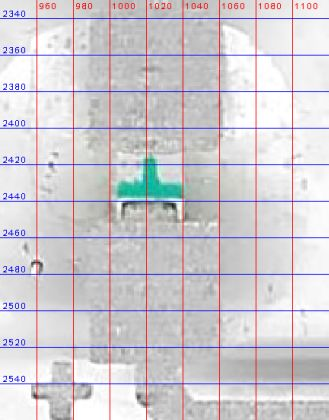
- Kesim ölçüldüğü gibi (kuyruk 0.4 mm kayık)
- Kesim konnektör eksenine simetrik; dielektrik ölçüldüğü gibi
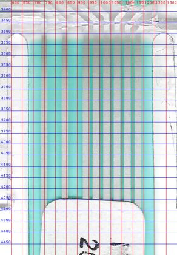
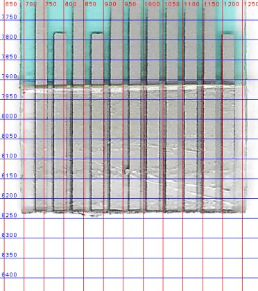
- Otomatik iskelet-graf vektörleştirme
- Kaba rota + gerçek merkeze oturtma
- Düzelt (uç kenetleme)
- Olduğu gibi bırak
- 69.9 mm (önceki)
- 70.7 mm (yeniden ölçüm)
- Köprü
- Alt baskı
Ölçüler ve eleman sayıları
| Ölçü | Değer | Not |
|---|---|---|
| Baş (genişlik × yükseklik) | 36.5 × 87.1 mm | köşe R1.0 |
| Toplam boy | 170.9 mm | |
| Kuyruk genişliği | 12.0 mm | yarık 2.1 mm, üst ucu y=70.7 |
| Konnektör | 11 poz × 1.0 mm | kontak 0.6 mm, 2/4/11 dummy |
| Hat genişliği | 0.5 mm | |
| LED pedi | 1.65 × 1.6 mm | boşluk 0.85 mm, LED gövdesi 0.5 × 1.0 mm |
| Polarite işareti | + 0.8 mm, çizgi 0.15 mm | gümüş baskı |
| Köprü bindirmesi | 0.4 mm | yama kenarından dışarı |
| Kart sınır kutusu | 36.50 × 170.90 mm | Kesim konturu |
| Kart alanı | 4116.0 mm² | |
| Gümüş alanı (alt baskı) | 820.9 mm² | |
| Dielektrik alanı | 1202.6 mm² | |
| Köprü alanı (2. gümüş baskı) | 41.88 mm² | 19 köprü |
Eleman sayıları
| Eleman | Adet |
|---|---|
| Hat (polyline) | 39 |
| Gümüş dikdörtgen (ped/blok/parmak) | 24 |
| Oval pencere | 0 |
| LED | 12 |
| Dielektrik yama | 10 |
| Köprü | 19 |
| Kontrol (belirsiz) rota | 12 |
Varsayımlar
- Ölçek 47.17 px/mm (P2 ile aynı tarama).
- Kesim deseni konnektör eksenine göre simetrik çizildi (taramada kuyruk ~0.26° dönük).
- Köprülerde üst/alt seçimi her kesişimde üst-gümüş / alt-gümüş maske örneklemesiyle yapıldı; B2/B3 alt yamasındaki yatay hat elle 'alt' ayarlandı.
- LED ped/gövde ölçüleri şablon: kaplama damlaları ped kenarlarını örtüyor.
- Konnektöre giden hatların pin sırası (leke altında) düzlemsel sıra + görülen 45° çaprazlarla belirlendi.
Doğrulama (taramaya bindirme)
Kabul durumu: KALDI · ROI y = [1550, 3520] px
| Metrik | Değer | Eşik | Sonuç |
|---|---|---|---|
| Gümüş kenar sapması medyan | 0.036 mm | ≤ 0.06 mm | ✔ geçti |
| Gümüş kenar sapması %90 | 0.133 mm | ≤ 0.15 mm | ✔ geçti |
| Gümüş kenar kapsaması | 0.823 | ≥ 0.8 | ✔ geçti |
| Taramada karşılıksız gümüş (gölge hariç) | 0.120 | ≤ 0.15 | ✔ geçti |
| Ağ / tutarlılık HATA (bilinmeyen) | 4 | ≤ 0 | ✘ kaldı |
| Gümüş sistematik ofset (her yan) / kayma | +0.002 mm / (-0.001, -0.019) mm | |ofset| uyarı > 0.03 | bilgi |
| Gümüş işaretli sapma medyanı | +0.000 mm | + geniş / − dar | bilgi |
| Gümüş yoğunluk kenarı (maskeden bağımsız) medyan / %90 | 0.024 / 0.088 mm | kapsama 0.88; ±6 px dışı sapma ölçülmez (kapı değil) | bilgi |
| Gümüş yoğunluk ofseti / kayma / bulanıklık σ | -0.007 mm / (-0.001, -0.029) mm / 0.015 mm | maske ofsetiyle farkı = maske yanlılığı | bilgi |
| Gümüş: tarama kenarlarının çizime ≤ 3 px oranı | 0.534 | bilgi (ters yön) | bilgi |
| Gümüş IoU | 0.628 | bilgi | bilgi |
| Taramada karşılıksız gümüş (ham / gölge hariç) | 0.140 / 0.120 | kapıda gölge hariç | bilgi |
| Gölge ofseti δ (genel) / kalkık karo | 0.30 mm / 3 | golge_haritasi.png | bilgi |
| Gümüş kenar (eski tam-piksel yöntem) medyan / %90 | 0.042 / 0.136 mm | önceki sürümle kıyas | bilgi |
En büyük sapmalı elemanlar
| Eleman | Tür | Medyan |sapma| mm | Ofset mm | Kayma (x, y) mm | Kapsama | Örnek |
|---|---|---|---|---|---|---|
| B1_alt | hat | 0.180 | +0.000 | (+0.000, +0.000) | 0.15 | 20 |
| B1_ust | hat | 0.140 | -0.074 | (-0.048, +0.101) | 0.39 | 51 |
| R3L_ust | hat | 0.136 | +0.021 | (+0.028, +0.028) | 0.39 | 67 |
| B2_alt | hat | 0.101 | +0.050 | (-0.017, -0.167) | 0.17 | 112 |
| H2818 | hat | 0.077 | -0.009 | (+0.057, -0.068) | 0.43 | 514 |
| R1_alt | hat | 0.075 | +0.078 | (-0.035, -0.032) | 0.43 | 236 |
| LED_B1_ped_ust | led_ped | 0.074 | +0.094 | (+0.022, -0.024) | 0.43 | 70 |
| H3317 | hat | 0.049 | +0.045 | (-0.256, -0.021) | 0.32 | 400 |
| V1143 | hat | 0.042 | -0.006 | (-0.020, -0.219) | 0.47 | 293 |
| LED_L2_ped_alt | led_ped | 0.158 | -0.013 | (+0.091, +0.163) | 0.82 | 80 |
| LED_C1_ped_alt | led_ped | 0.120 | +0.024 | (+0.046, +0.155) | 0.71 | 79 |
| LED_B1_ped_alt | led_ped | 0.118 | +0.030 | (+0.060, +0.122) | 0.55 | 80 |
Düzeltme yönü: eleman ofset kadar daraltılır, kaymanın tersine taşınır. Tüm elemanlar: work/<ad>/eleman_sapma.json.
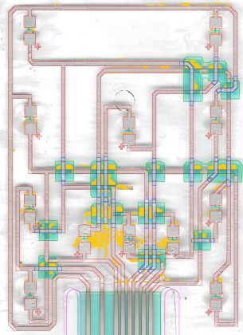
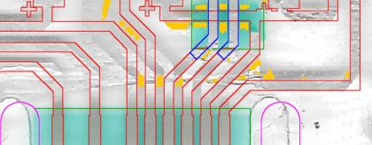
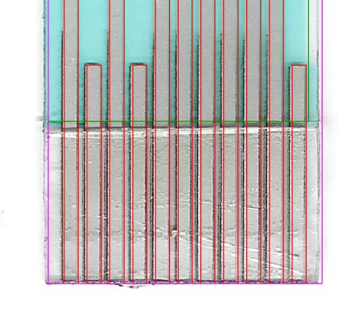
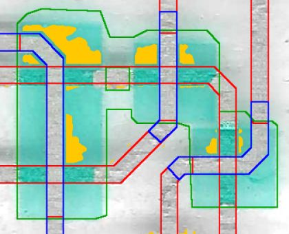
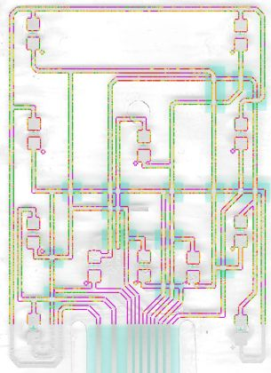
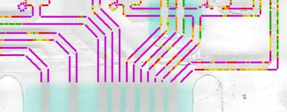
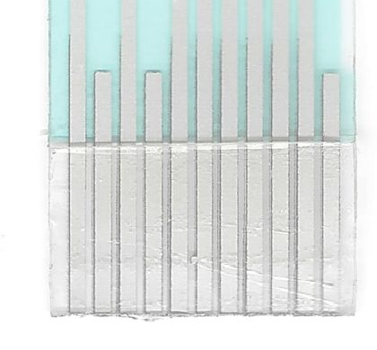
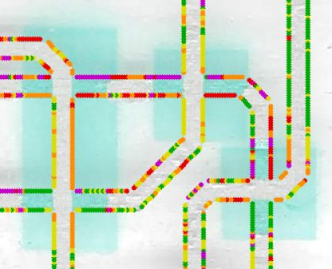
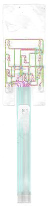
Ağ ve tasarım tutarlılığı
Çizim geometrisinden (taramadan bağımsız) çıkarılan elektrik ağları ve çizim kontrolleri. HATA 4, UYARI 14, bilgi 7, kullanıcı tarafından kabul edilmiş 0. Bilinmeyen HATA kabul kapısını düşürür; bilerek kabul edilenler parts/<ad>.json → kabul_edilen_bulgular ile işaretlenir.
| Seviye | Kontrol | Açıklama | Konum (mm) | Kimlik |
|---|---|---|---|---|
| HATA | Cihaz ucu hiçbir pine ulaşmıyor | Hiçbir pine ulaşmayan ağ: LED_B1.ust, LED_R3.ust, LED_R4.ust (kopukluk veya eksik hat) | (12.76, 62.29) | pinsiz_ag:LED_B1.ust,LED_R3.ust,LED_R4.ust |
| HATA | Cihaz ucu hiçbir pine ulaşmıyor | Hiçbir pine ulaşmayan ağ: LED_B2.ust (kopukluk veya eksik hat) | (19.16, 62.25) | pinsiz_ag:LED_B2.ust |
| HATA | Cihaz ucu hiçbir pine ulaşmıyor | Hiçbir pine ulaşmayan ağ: LED_B3.ust (kopukluk veya eksik hat) | (25.48, 62.38) | pinsiz_ag:LED_B3.ust |
| HATA | Cihaz ucu hiçbir pine ulaşmıyor | Hiçbir pine ulaşmayan ağ: LED_C1.ust (kopukluk veya eksik hat) | (19.14, 46.75) | pinsiz_ag:LED_C1.ust |
| UYARI | Bitişik olmayan pinler aynı ağda | Pinler 6, 9 aynı ağda (bitişik değil: şüpheli) | (19.16, 64.7) | ayrik_pinler:6,9 |
| UYARI | Eleman taramada doğrulanamadı | 'B1_alt' kenar örneklerinin yalnız %15'i taramada karşılık buldu (eleman yanlış yerde ya da referans maske bu bölgede eksik; ısı haritasında mor) | (12.67, 65.92) | eleman_eslesmedi:B1_alt |
| UYARI | Eleman taramada doğrulanamadı | 'B1_ust' kenar örneklerinin yalnız %39'i taramada karşılık buldu (eleman yanlış yerde ya da referans maske bu bölgede eksik; ısı haritasında mor) | (13.68, 62.0) | eleman_eslesmedi:B1_ust |
| UYARI | Eleman taramada doğrulanamadı | 'B2_alt' kenar örneklerinin yalnız %17'i taramada karşılık buldu (eleman yanlış yerde ya da referans maske bu bölgede eksik; ısı haritasında mor) | (21.12, 65.99) | eleman_eslesmedi:B2_alt |
| UYARI | Eleman taramada doğrulanamadı | 'H2818' kenar örneklerinin yalnız %43'i taramada karşılık buldu (eleman yanlış yerde ya da referans maske bu bölgede eksik; ısı haritasında mor) | (15.94, 61.64) | eleman_eslesmedi:H2818 |
| UYARI | Eleman taramada doğrulanamadı | 'H3317' kenar örneklerinin yalnız %32'i taramada karşılık buldu (eleman yanlış yerde ya da referans maske bu bölgede eksik; ısı haritasında mor) | (13.86, 67.47) | eleman_eslesmedi:H3317 |
| UYARI | Eleman taramada doğrulanamadı | 'R1_alt' kenar örneklerinin yalnız %43'i taramada karşılık buldu (eleman yanlış yerde ya da referans maske bu bölgede eksik; ısı haritasında mor) | (7.99, 72.78) | eleman_eslesmedi:R1_alt |
| UYARI | Eleman taramada doğrulanamadı | 'R3L_ust' kenar örneklerinin yalnız %39'i taramada karşılık buldu (eleman yanlış yerde ya da referans maske bu bölgede eksik; ısı haritasında mor) | (32.44, 56.04) | eleman_eslesmedi:R3L_ust |
| UYARI | Eleman taramada doğrulanamadı | 'V1143' kenar örneklerinin yalnız %47'i taramada karşılık buldu (eleman yanlış yerde ya da referans maske bu bölgede eksik; ısı haritasında mor) | (20.98, 62.81) | eleman_eslesmedi:V1143 |
| UYARI | Elemanın taramadan sapması büyük | 'B2_ust' medyan sapma 0.105 mm (ofset +0.006, kayma -0.123/+0.020 mm) | (18.45, 60.29) | eleman_sapma:B2_ust |
| UYARI | Elemanın taramadan sapması büyük | 'B3_ust' medyan sapma 0.109 mm (ofset -0.002, kayma -0.163/+0.060 mm) | (24.63, 60.35) | eleman_sapma:B3_ust |
| UYARI | Elemanın taramadan sapması büyük | 'Kopru_35_R2L_alt' medyan sapma 0.115 mm (ofset +0.113, kayma -0.027/+0.142 mm) | (31.42, 53.58) | eleman_sapma:Kopru_35_R2L_alt |
| UYARI | Hattın ucu boşta | 'C1_ust' hattının sonu hiçbir gümüşe değmiyor (açık uç) | (15.77, 61.25) | serbest_uc:C1_ust:son |
| UYARI | Farklı ağlar çok yakın / uç kısa | V466 ile H3317 arası 0.055 mm (değmesi gerekiyorsa uç kısa; değilse aralık dar) | (7.55, 66.36) | yakin_bosluk:H3317/V466 |
Çizimden çıkarılan ağlar
| Ağ | Pinler | Uçlar (LED/ped) | Hat sayısı |
|---|---|---|---|
| 1 | 1 | LED_L1.ust, LED_L2.ust, LED_R1.ust, LED_R2.ust | 9 |
| 2 | 3 | LED_L3.ust, LED_L4.ust | 4 |
| 3 | 5 | LED_B1.alt | 3 |
| 4 | 6, 9 | LED_B2.alt, LED_B3.alt, LED_L1.alt, LED_L3.alt, LED_R3.alt | 11 |
| 5 | 7 | LED_L2.alt, LED_L4.alt, LED_R4.alt | 6 |
| 6 | 8 | LED_C1.alt, LED_R1.alt | 4 |
| 7 | 10 | LED_R2.alt | 2 |
| 8 | dummy 2 | — | 0 |
| 9 | dummy 4 | — | 0 |
| 10 | dummy 11 | — | 0 |
| 11 | PİNSİZ | LED_B1.ust, LED_R3.ust, LED_R4.ust | 7 |
| 12 | PİNSİZ | LED_B2.ust | 2 |
| 13 | PİNSİZ | LED_B3.ust | 2 |
| 14 | PİNSİZ | LED_C1.ust | 2 |
Bu tablo RAPOR pin eşlemesiyle karşılaştırılmalıdır; fark varsa ya çizim ya da eşleme yanlıştır.
Otomatik onarımlar
- Uç kenetleme: L3_ust bas ucu: 0.074 mm boşluk -> 'LED_L3_ped_ust' (uzatıldı 0.324 mm)
- Uç kenetleme: L4_ust bas ucu: 0.116 mm boşluk -> 'LED_L4_ped_ust' (uzatıldı 0.366 mm)
- Uç kenetleme: H3317 bas ucu: 0.055 mm boşluk -> 'V466' (reddedildi: iki pinli ağı birleştirir (pin [5] / [7]))
- Uç kenetleme: T3_R4L son ucu: 0.159 mm boşluk -> 'LED_R4_ped_ust' (uzatıldı 0.409 mm)
- Uç kenetleme: C1_ust bas ucu: 0.01 mm boşluk -> 'LED_C1_ped_ust' (uzatıldı 0.260 mm)
- Uç kenetleme: B2_ust bas ucu: 0.074 mm boşluk -> 'LED_B2_ped_ust' (uzatıldı 0.324 mm)
- Uç kenetleme: B3_ust bas ucu: 0.095 mm boşluk -> 'LED_B3_ped_ust' (uzatıldı 0.345 mm)
- Uç kenetleme: R1L_ust son ucu: 0.116 mm boşluk -> 'LED_R1_ped_ust' (uzatıldı 0.366 mm)
- Köprü uç kuralı: 'C1_ust' yama içindeki parçası alt baskıya alındı
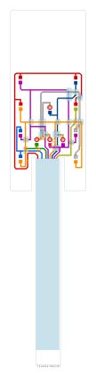
Önerilen düzeltmeler (ölçümden)
Yoğunluk kenarı ölçümünden (maskeden bağımsız) çıkarılan somut düzeltmeler; otomatik uygulanmaz. Tasarım niyetiyle (simetri, ortak adım) çelişen öneri varsa ölçüm analiz kaydına yazılır, niyet korunur. Şablon/tahmin elemanların (LED pedleri) önerileri kaplama altı belirsizliği taşır.
| Tür | Öneri |
|---|---|
| hizalama | Gümüş çizimi genel olarak (-0.001, -0.029) mm kaymış. mm ile tanımlı (parametrik) elemanlar için SCAN px0 983.2 -> 983.2, py0 175.0 -> 176.3. Taramadan px ile okunan rotalar bu değişiklikten etkilenmez. |
| eleman | 'LED_L3_ped_alt' (led_ped, şablon/tahmin) taramaya göre (-0.008, +0.231) mm kaymış -> (+0.008, -0.231) mm taşı |
| eleman | 'B2_alt' (hat) taramaya göre (-0.092, +0.033) mm kaymış -> (+0.092, -0.033) mm taşı |
| eleman | 'LED_C1_ped_alt' (led_ped, şablon/tahmin) taramaya göre (-0.009, +0.086) mm kaymış -> (+0.009, -0.086) mm taşı |
| eleman | 'Kopru_34_R1L_alt' (kopru) taramaya göre (-0.029, -0.074) mm kaymış -> (+0.029, +0.074) mm taşı |
| eleman | 'C1_alt' (hat) taramaya göre (-0.073, -0.012) mm kaymış -> (+0.073, +0.012) mm taşı |
| eleman | 'Kopru_35_R2L_alt' (kopru) taramaya göre (-0.007, +0.072) mm kaymış -> (+0.007, -0.072) mm taşı |
| eleman | 'T3' (hat) taramaya göre (+0.004, -0.068) mm kaymış -> (-0.004, +0.068) mm taşı |
| eleman | 'R3L_alt' (hat) taramaya göre (-0.066, -0.013) mm kaymış -> (+0.066, +0.013) mm taşı |
| eleman | 'C1_ust' (hat) taramaya göre (-0.015, -0.063) mm kaymış -> (+0.015, +0.063) mm taşı |
| eleman | 'LED_C1_ped_ust' (led_ped, şablon/tahmin) taramaya göre (+0.001, +0.059) mm kaymış -> (-0.001, -0.059) mm taşı |
| eleman | 'B3_ust' (hat) taramaya göre (-0.012, +0.057) mm kaymış -> (+0.012, -0.057) mm taşı |
| eleman | 'H2818' (hat) taramaya göre (+0.013, -0.057) mm kaymış -> (-0.013, +0.057) mm taşı |
| eleman | 'LED_R2_ped_alt' (led_ped, şablon/tahmin) taramaya göre (+0.054, +0.018) mm kaymış -> (-0.054, -0.018) mm taşı |
| eleman | 'B2_ust' (hat) taramaya göre (-0.054, -0.013) mm kaymış -> (+0.054, +0.013) mm taşı |
| eleman | 'Kopru_08_H2818' (kopru) taramaya göre (+0.053, +0.000) mm kaymış -> (-0.053, -0.000) mm taşı |
| eleman | 'R1_alt' (hat) taramaya göre (-0.053, -0.017) mm kaymış -> (+0.053, +0.017) mm taşı |
| eleman | 'LED_R2_ped_alt' (led_ped) her yandan +0.051 mm geniş |
| eleman | 'LED_R1_ped_alt' (led_ped, şablon/tahmin) taramaya göre (+0.013, +0.050) mm kaymış -> (-0.013, -0.050) mm taşı |
| eleman | 'R2L_alt' (hat) taramaya göre (-0.002, -0.046) mm kaymış -> (+0.002, +0.046) mm taşı |
Konnektör pin eşlemesi
| Pin | Bağlantı |
|---|---|
| 1 | R1 ortak (anot) |
| 2 | dummy |
| 3 | L3/L4 üst |
| 4 | dummy |
| 5 | H3317 hattı |
| 6 | V916 / H2818 |
| 7 | L2 alt düğümü (L2→L4) |
| 8 | R1 LED katodu (+C1) |
| 9 | L1/L3 katodu (+B2/B3) |
| 10 | R2/R3 katodu |
| 11 | dummy |
Fiziksel parçada kontrol edilecekler
İşaretledikleriniz bu tarayıcıda saklanır. Multimetre süreklilik testiyle doğrulayıp sonucu 'Pin 5 ↔ LED B1 üst ped: süreklilik VAR' biçiminde iletin.
Daha iyi sonuç için yapabilecekleriniz
Analiz görselleri
Analiz sırasında üretilen tüm görseller. Açıklamalı olanlar analiz kaydından, diğerleri dosya adından otomatik açıklanmıştır. Izgara etiketleri tarama pikseli (1 mm = 47.17 px).
Çıktılar ve CorelDRAW
| Dosya | Amaç |
|---|---|
output/P1_duzenlenebilir.svg | CorelDRAW'da düzenleme (hatlar kalınlıklı çizgi, pedler dikdörtgen) |
output/P1_uretim.svg | Üretim: her katman tek kapalı dolgu |
output/P1_uretim.pdf | Üretim: katmanlı vektör PDF |
output/P1_kontrol_taramali.svg | Kontrol: çizim + altta hizalı tarama |
Katmanlar: Takviye (arka yuz, ZIF), Gumus iletken, Dielektrik (yalitkan), Gumus kopru (2. baski, dielektrik ustu), LED (montaj), Etiket (yapistirma), Kontrol (taramadan kesin okunamayan), Kesim (dis kontur + pencereler)
CorelDRAW'da kullanım
- Dosya > Aç (veya İçe Aktar) ile SVG'yi açın; ölçek 1:1 mm'dir, sayfa her yanda 5 mm boşlukludur.
- Katmanlar üst seviye gruplar olarak gelir (Nesne Yöneticisi). Düzenlemeden önce 'Kesim' ve 'Tarama' gruplarını kilitleyin.
- Düzenlenebilir sürümde hatlar kalınlıklı çizgidir: düğüm taşıyarak rota değiştirin, kalınlığı Kontur penceresinden değiştirin.
- Üretim için dolgu sürümünü (
_uretim.svg/.pdf) kullanın; her baskı katmanı ayrı film/elektir. - Kalıcı değişiklik istiyorsanız ölçüyü
parts/<ad>_design.pyiçinde değiştiripfpc.py all <ad>çalıştırın; böylece doğrulama ve rapor da güncellenir.
Ek: parametreler
| Alan | Değer |
|---|---|
| Kaynak | docs/K.pdf sayfa 1 |
| Kırpım (tarama px) | [599, 199, 2557, 8633] |
| Eğiklik düzeltmesi | 0.1° |
| Ölçek | 47.17 px/mm |
| Parça tipi | led |
| Tasarım dosyası | parts/p1_design.py |
| Yeniden üretim | python .devin/skills/fpc-vektor/scripts/fpc.py all p1 |